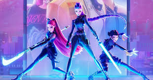
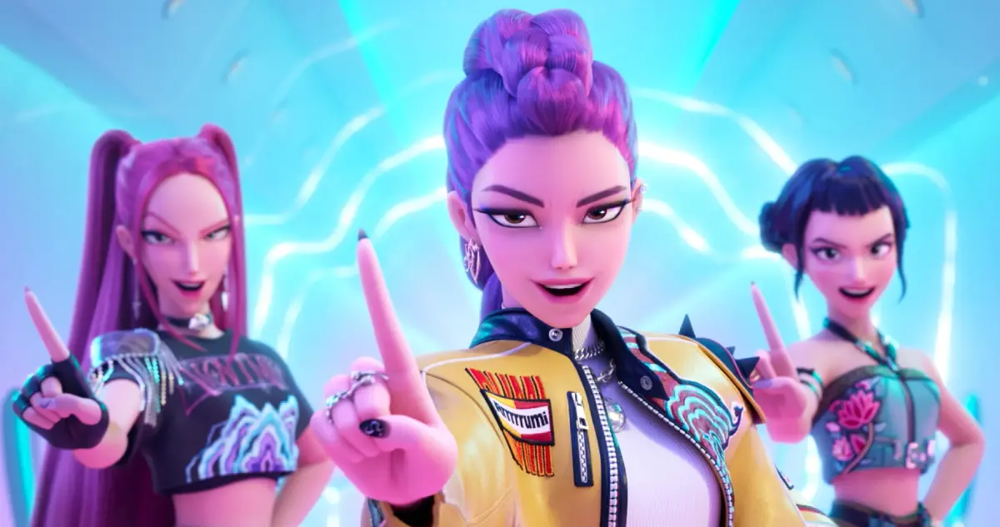
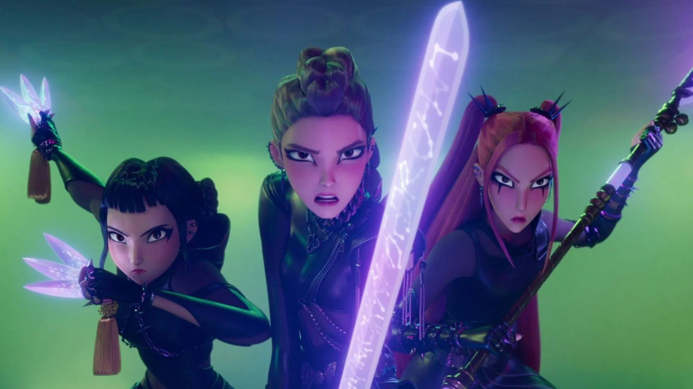

Proposta
Quando não estão lotando estádios, as estrelas do K-pop Rumi, Mira e Zoey usam seus poderes secretos para proteger os fãs de ameaças sobrenaturais.
Objetivos
- Fortificar o Honmoon.
- Defender o Honmoon.
- Cantar para fortificar o Honmoon.
- Derrotar os demônios.
Objetivo Futuro - Huntrix
- Derrotar Gwi-ma e proteger os humanos.
Como Funciona
- Rumi, Mira e Zoey cantam e, por meio de suas vozes, elas criam o Honmoon e o fortificam, criando uma barreira entre os demônios e os humanos.
- Os fãs cantam junto delas, ajudando a fortificar o Honmoon com suas vozes.
Galeria de fotos
Golden Show
Saja Boys



teste

teste
teste

Foto de Igor Miske na Unsplash
espaçamento final
espaçamento final